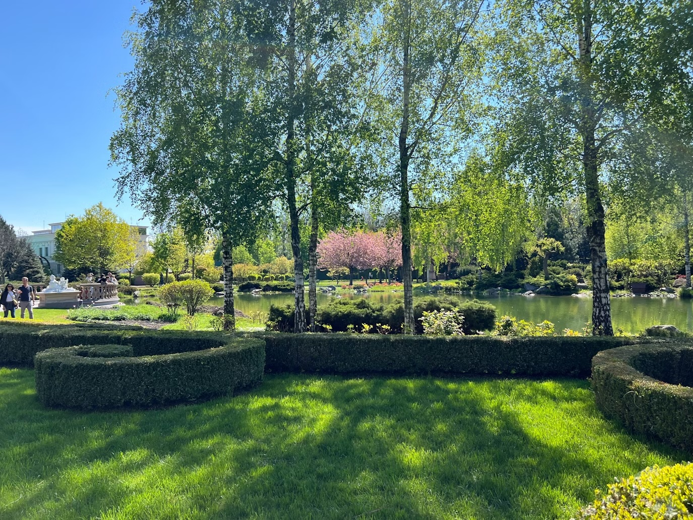
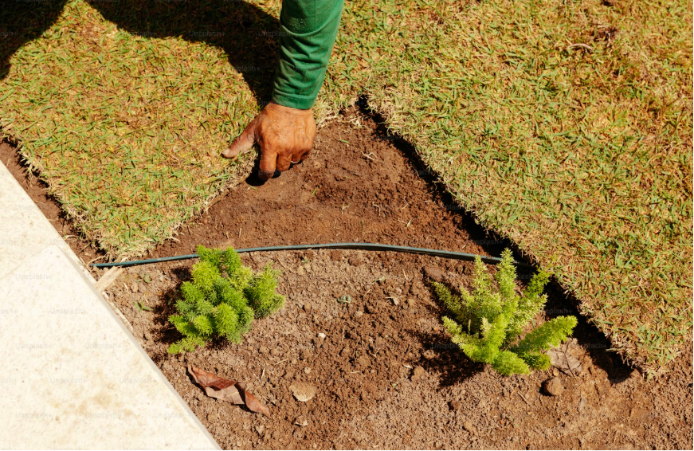
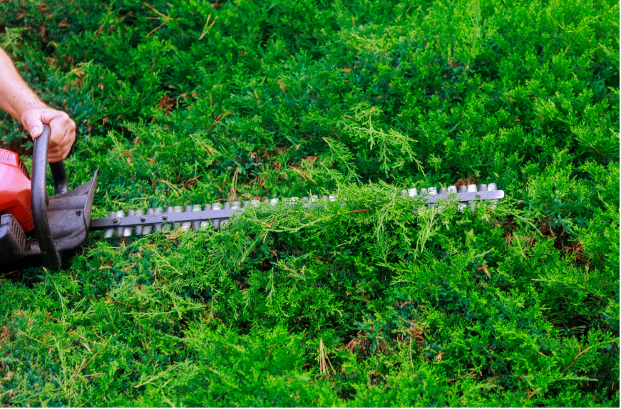

“L'entretien au service
de votre jardin”
Je prends soin de vos espaces verts de façon globale et soignée.
Qu’il s’agisse
de garder une pelouse bien entretenue, de redonner
forme à vos haies et arbustes, de nettoyer les allées ou les massifs,
ou encore d’effectuer un élagage léger, j’interviens avec méthode et
discrétion.
J’assure également le ramassage des feuilles et l’évacuation des déchets verts, pour vous laisser un jardin propre, net et agréable en toute saison.

J’interviens pour transformer vos extérieurs et leur donner du
caractère.
J’aime imaginer des jardins vivants, en jouant avec les
volumes, les textures
et les saisons :
créer un massif, planter une haie, installer un potager ou dérouler
un gazon tout neuf, c’est donner une nouvelle vie à un espace. Je
peux également structurer vos allées avec des matériaux comme le
gravier ou les pavés, ou encore protéger et embellir vos sols avec du
paillage, toujours dans le souci du détail et du rendu naturel.

Je réalise des interventions ciblées pour l’entretien ou la
suppression de vos arbres, dans le respect de leur environnement.
Qu’il s’agisse d’un élagage léger pour maîtriser le développement
d’un arbre, sécuriser une zone ou laisser passer
la lumière, ou d’un
abattage nécessaire pour des raisons de sécurité ou autre.
Chaque situation est différente : je prends le temps d’évaluer les
besoins,
de conseiller au mieux et d’intervenir dans les règles de
l’art.

Moi, c’est Grace Backemba. Passionné depuis toujours par la nature et les jardins, j’ai fait de l’entretien paysager bien plus qu’un métier : une vocation. Diplômé d’un Bac Pro en aménagement paysager et basé à Arpajon,
dans le 91, je me déplace sur toute l’Île-de-France pour prendre soin
de vos espaces verts, que vous soyez particulier, professionnel, copropriété ou collectivité.
Par ailleurs, j’ai enrichi ma formation par des spécialisations techniques
et plusieurs années d’expérience sur le terrain, au service de collectivités et de grandes copropriétés.
Aujourd’hui, je mets cette expertise à votre disposition pour des interventions efficaces, soignées et adaptées
à chaque chantier.
Mais je ne suis pas seul dans l’aventure.
Nous sommes trois frères, unis par la même exigence de qualité.
Je me permets de prendre la main : Josué Backemba. Titulaire d’un Master en management et
entrepreneuriat, je suis en charge de la gestion et des finances. Mon objectif est simple :
permettre à Grace de se concentrer pleinement sur son métier, sans être freiné par les préoccupations administratives ou logistiques.
Et je passe le relais à Rodrigue, notre troisième frère.
Moi, c’est Rodrigue Backemba. Avec une licence en géographie et aménagement, complétée par une spécialisation en droit, je m’occupe des devis, des rendez-vous et de la relation avec les clients. J’assure le lien entre le terrain et nos partenaires pour que chaque projet se déroule avec clarté, réactivité et sérénité. Mon rôle, comme celui de Josué, est de permettre à Grace d’exercer
son savoir-faire dans les meilleures conditions.
Avec Backemba Paysage,
votre jardin est entre de bonnes mains.